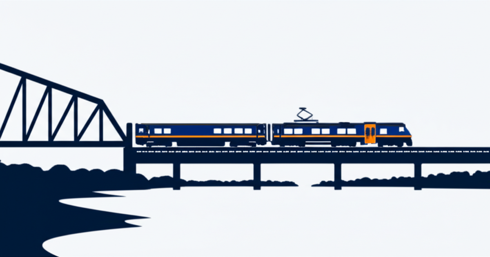

Nagsimula na ang cutover ngayon

Nangyayari na ang Portal North Bridge cutover. Simula ngayon, Pebrero 15, kino-connect ng Amtrak ang bagong tulay sa Northeast Corridor, at maaantala ang serbisyo ng NJ Transit sa loob ng apat na linggo. Lahat ng linya ng riles maliban sa Atlantic City Rail Line ay apektado.
Kung sumasakay ka sa NJ Transit papuntang New York, magbabago ang iyong biyahe simula ngayon. Sinasaklaw ng post na ito ang kailangan mong malaman at kung paano makakatulong ang Reroute NJ sa mga detalye.
Ang kailangan mong malaman
Ang cutover ay mula Pebrero 15 hanggang Marso 15, 2026. Sa panahong ito, halos kalahati ng lahat ng tren ng NJ Transit sa pagitan ng New Jersey at New York Penn Station ay mababawasan. Ang epekto ay depende sa iyong linya:
- Ang mga linya ng Montclair-Boonton at Morris & Essex ay dina-divert sa Hoboken Terminal sa halip na New York Penn Station. Mula sa Hoboken, mag-transfer ka sa PATH, ferry, o bus para makarating sa Manhattan.
- Ang Northeast Corridor at North Jersey Coast Line ay patuloy na papunta sa New York Penn Station ngunit may nabawasang dalas. Mas kaunting tren, mas mahabang paghihintay.
- Ang Raritan Valley Line ay nawalan ng lahat ng one-seat ride papuntang Penn Station. Ang mga tren ay nagtatapos sa Newark Penn Station. Mag-transfer sa Northeast Corridor o PATH mula roon.
Paano makakatulong ang Reroute NJ
Gumawa kami ng limang tool para tulungan kang mag-navigate sa susunod na apat na linggo:
Gabay sa linya — Piliin ang iyong linya at istasyon para makita kung paano eksaktong nagbabago ang iyong biyahe, anong mga alternatibong ruta ang available, at anong tiket ang kailangan mo.
Paghahambing ng biyahe — Piliin ang iyong istasyon sa NJ at destinasyon sa Manhattan, at tingnan ang bawat opsyon ng ruta na magkatabi na may mga oras ng biyahe, gastos, at detalye ng transfer.
Mga balita — Mga ulat tungkol sa cutover mula sa mga lokal at rehiyonal na pinagmulan ng balita, ina-update sa buong araw. I-filter ayon sa pinagmulan, linya, o kategorya.
Interactive na mapa — Lahat ng limang apektadong linya sa mapa na may mga marker ng istasyon, transfer point, at lokasyon ng Portal Bridge.
I-embed at ibahagi — Mga embed code at tool para sa mga newsroom at publisher na gustong ilagay ang mga resource na ito sa kanilang sariling site.
Available sa 11 wika
Ang bawat pahina ng Reroute NJ ay available sa English, Spanish, Chinese, Tagalog, Korean, Portuguese, Gujarati, Hindi, Italian, Arabic, at Polish. Ito ang mga pinakakaraniwang sinasalitang wika sa New Jersey. Ang bawat wika ay may sariling kumpletong set ng mga isinalin na pahina na may navigation, label, paglalarawan, at metadata. Ang mga pangalan ng istasyon at linya ay nananatiling English dahil iyon ang nasa mga karatula.
Suportahan ang proyekto
Ang Reroute NJ ay libre at open source. Kung nakita mong kapaki-pakinabang ito, maaari mong suportahan ang proyekto sa GitHub Sponsors, Venmo, o sa pamamagitan ng pagbabahagi nito sa isang taong sumasakay sa NJ Transit.
Ang pagkaantalang ito ay pansamantala. Ang bagong Portal North Bridge ay papalitan ang isang 115-taong-gulang na bottleneck na nagdudulot ng sunud-sunod na pagkaantala sa Northeast Corridor sa loob ng mga dekada. Apat na linggo ng hirap kapalit ng mga taon ng mas magandang serbisyo.
Mag-plano nang maaga, umalis nang maaga, at magpasensya sa isa't isa sa mga platform. Malalampasan natin ito.